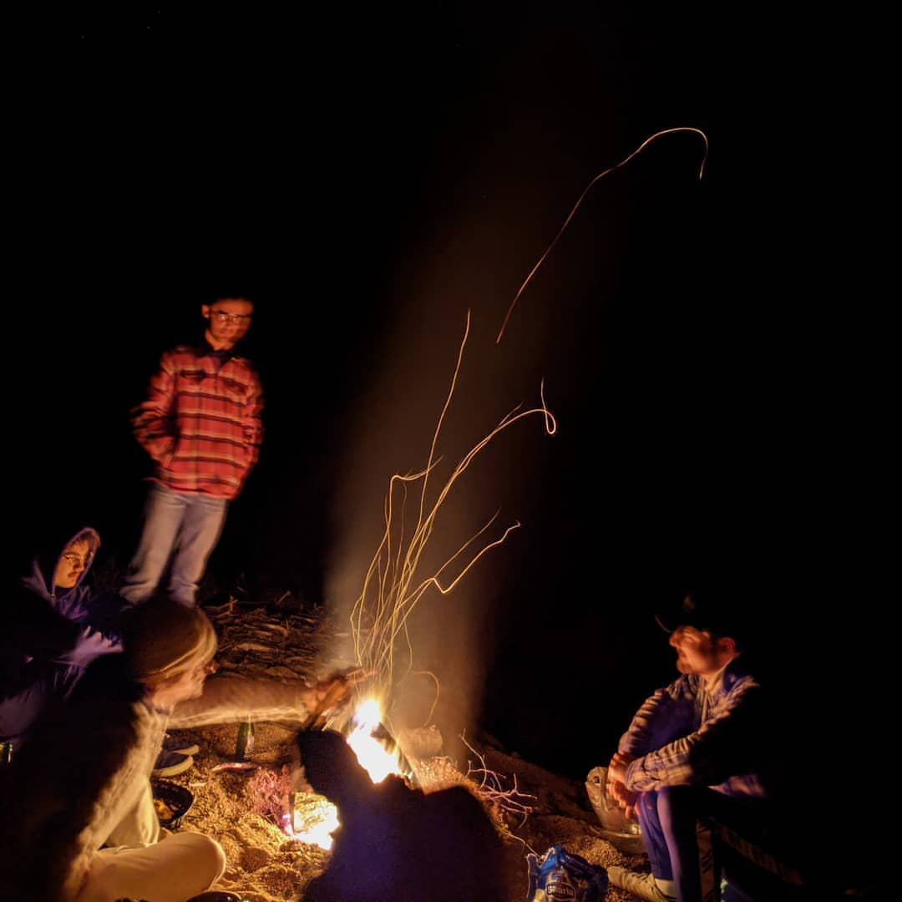
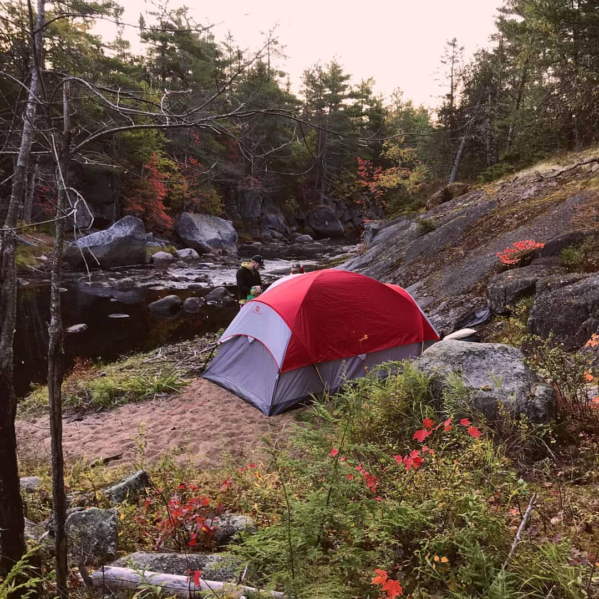
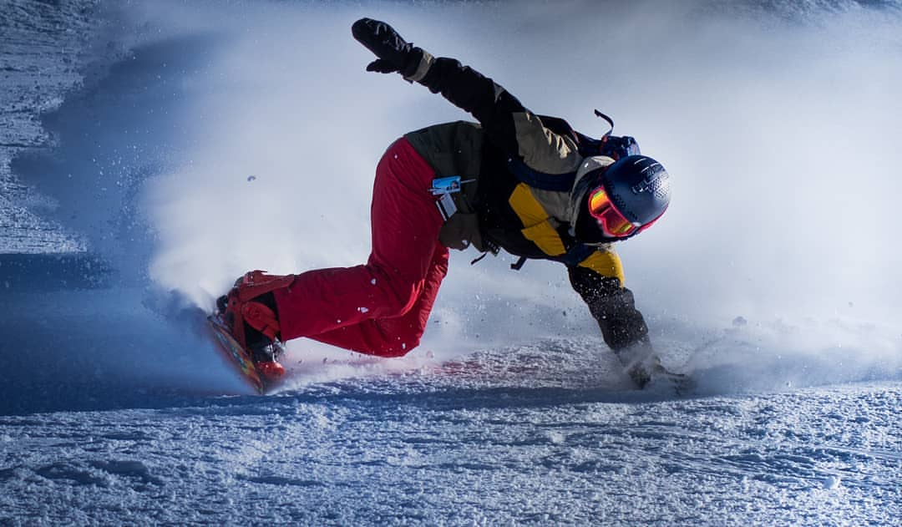
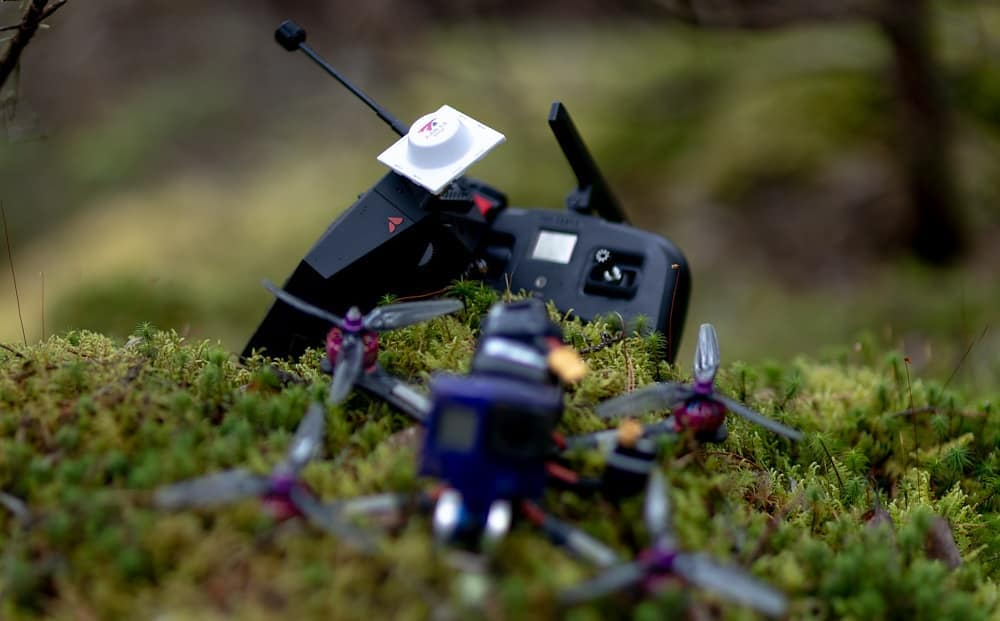
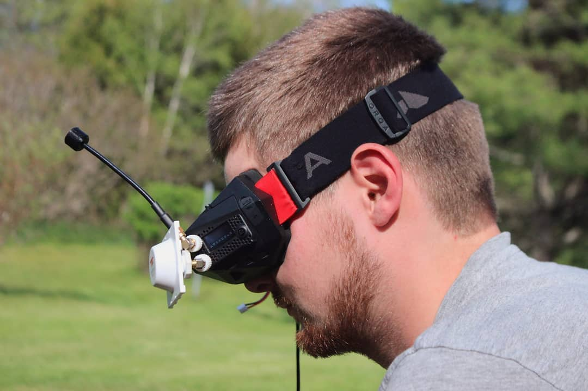
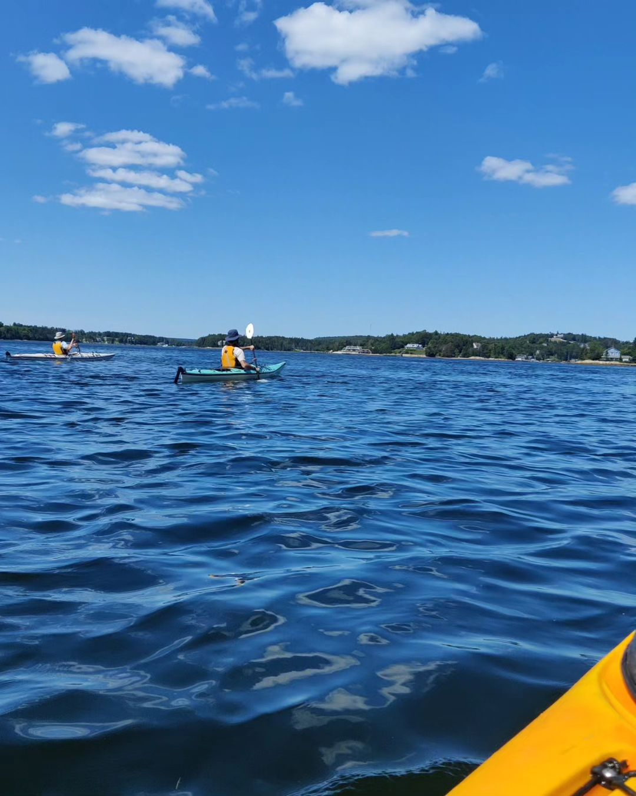
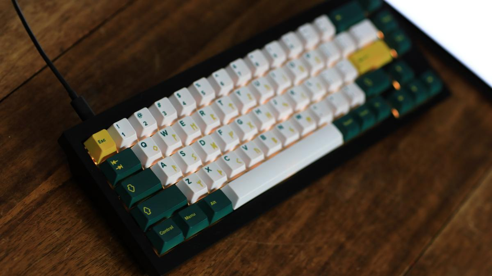
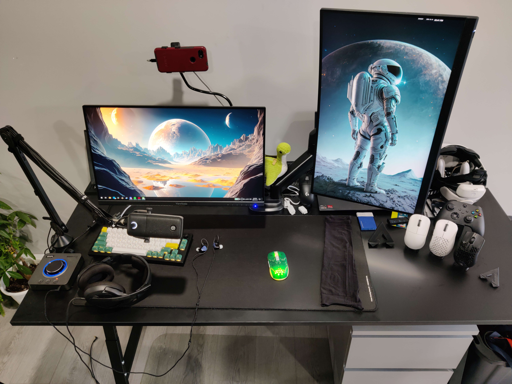

I (Eliote Schuler) was born on November 2nd 1999, in the small town of Bridgewater, Nova Scotia Canada. My younger brother, Maxime Schuler was also born in Bridgewater two years later. I grew up in a french household due to both my parents being from Switzerland.
My father tried to speak to me in German as well, but gave up after I still showed no interest in interacting in German by the time I was 5 years old. This means that on top of speaking both French and English, I can sometimes piece German sentences together even though I have next to no memory of learning it.
In 2005, I went to “Ecole de la Rive Sud” (Which was then later changed to Centre Scolaire de la Rive Sud around 2010) from grade primary to grade 9. In grade 10, I switched schools to take part in the IB program at Park View education Center. I graduated with decent grades.
I wasn’t sure what I wanted to do as a career at the time, as I had a lot of hobbies but couldn’t pick one to broaden my knowledge in a more professional manner. So, during the summer of 2019, after having worked a low-level job at a call center as customer service for a credit card company, I went on a backpacking trip with my best friend.
We started by spending a week in Amsterdam while we waited for our connecting flight, which then took us to Thailand. We went from Hostel to Hostel for about a month and a half throughout Thailand.
Upon returning, I didn’t want to go back to the call center. Luckily, since I was a skilled custom drone builder/pilot who was also into all things video production as well, I was hired by a small Video production company, Picnic Studios. My work there involved everything from the start to finish in video production. From pre-production, camera operating, drone operating, audio recording, editing, as well as building custom drones and modeling and printing various parts we needed for our cameras or drones. I worked there from winter 2019 all the way until September 2023.
I had finally decided to go to Dalhousie due to my continued interest in Computers and electronics, on top of my natural curiosity for all things electronic and how they work, as well as my DIY tinkering nature. On top of that, Picnic had a rough go during Covid, so work had slowed down during and even after the pandemic, so I thought it was an appropriate time for a career change/expansion of knowledge. This brings us to the present!
|
|         |